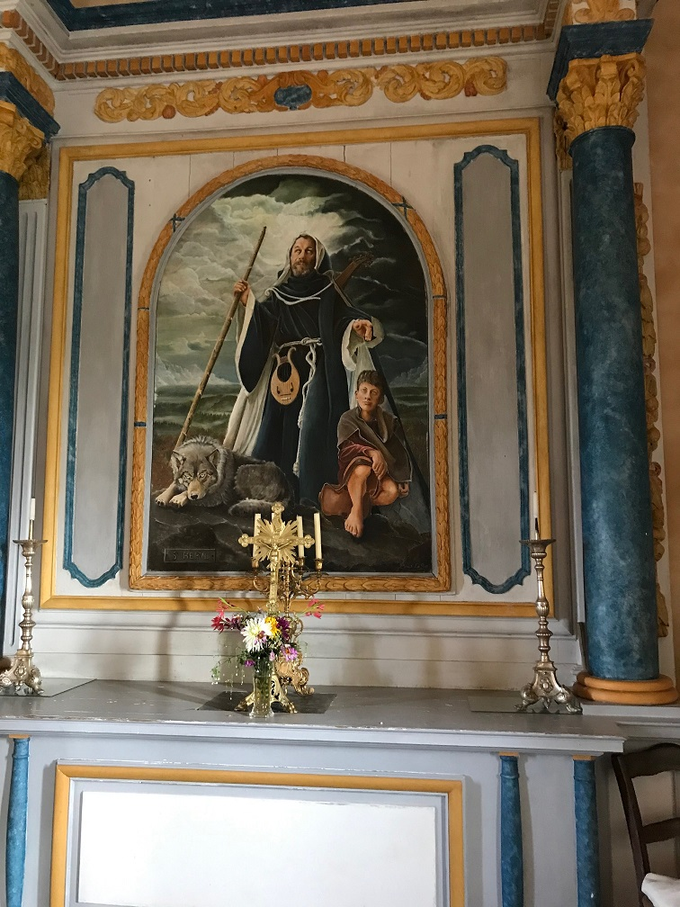
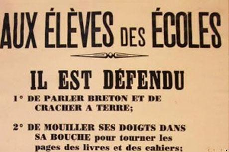

Chanson de Fête des Petits Pâtres
Lecture for the Children's Feast
Dialecte de Cornouaille
|
Dix des dix-sept couplets sont publiés par La Villemarqué en 1859, dans sa "Légende celtique", à titre de "Pièce justificative" pour la "Légende de saint Hervé, Patron des chanteurs populaires d'Armorique" qui, avec celles de Saint Patrick et Saint Kado, compose cet ouvrage consacré à la légende dorée celtique. Sept seulement sont traduits: ce sont des "fragments qu'on suppose de Saint-Hervé" , à qui la tradition attribue également le Chant du Paradis . |
 Saint Hervé , maître-autel de la chapelle de Ménez-Bré (photo J. Philippe-Quentin) |
Ten out of seventeen stanzas were printed by La Villemarqué in 1859, in his "Celtic Legend", as a "written evidence" supporting his "Legend of Saint Hervé, the holy Patron of Armorican folk singers", which, along with those of Saint Patrick and Saint Cadoc, make up this work dedicated to the Holy Legend of the Celts. Only seven of them are translated, to wit "Fragments that are ascribed to Saint Hervé" , as is, as tradition has it, the Song of Paradise . |
Mélodie- Tune
(Mode hypophrygien, noté ré majeur dans le Barzhaz)
| Français | English |
|---|---|
|
1. Approchez-vous donc, les enfants:
Venez entendre un chant récent, Que l'on vient d'écrire pour vous. Retenez-le donc bien, surtout! 2. Dès le réveil, dans votre lit, Tournez vers Dieu votre esprit Faites le signe de la croix. Puis, dans l'espérance et la foi, 3. La charité dites: "Seigneur, Mon corps et mon âme et mon cœur Sont à Toi. Et fais que je meure, Faute d'être bon, avant l'heure." 4. Dites le bénédicité Avant -et les grâces après- Le repas ou sinon craignez De devoir quelquefois jeûner. 5. Ainsi font les petits oiseaux Des bois, perchés sur les rameaux, Pour un grain de blé, pour un ver Et de la rosée pour dessert. 6. Lorsque vous gardez vos troupeaux Un bâton de saule il vous faut. Quand vous les ramenez chez vous, Le soir, prenez bien garde au loup. 7. Mais ne jurez jamais contre eux. Pour les gronder, dites au mieux: "Allez, allez, méchants voleurs, Laissez donc l'herbe du recteur!" 8. "Pâture à renards, à corbeaux, N'es-tu pas rassasié bientôt? Tout ce temps, tu me le paieras, Perdu pour courir après toi." 9. En voyant un corbeau voler, Songez au diable noir, mauvais. Si c'est une blanche colombe C'est à son doux ange qu'on songe. 10. Et pensez que Dieu vous surveil- Le au haut du ciel, tel le soleil. Dont les rayons font fleurir la Rose sauvage à Comana. 11. En parlant aux gens du logis, Soyez affectueux et polis Dans tous vos propos; et surtout Dites: "Mon frère, ma sœur, vous..." 12. Témoignez-leur respect tout comme A la noblesse, aux gentilshommes, Et aux prêtres auxquels il faut Répondre en choisissant ses mots. 13. Ne passez par bourg, ni écart Où Jésus dans Son ostensoir Attend, sans venir L'adorer: Vingt jours d' indulgences aurez. 14. Rencontrant le Saint Sacrement, Suivez-Le pas à pas. Vraiment Le Roi des anges et des saints Vous aura montré le chemin. 15. A la Fête-Dieu les plus sages Pourront parsemer Son passage De fleurs, avant qu'ils soient admis A le faire au ciel devant Lui. 16. Le soir, n'éteignez la lumière Qu'après avoir dit vos prières Qu'un ange du ciel vienne encore Veiller sur vous jusqu'à l'aurore. 17. Voici mes enfants, le moyen De toujours vivre en bons chrétiens. Mettez en pratique mon chant: Vous aurez vécu saintement.. Trad. Christian Souchon (c) 2008 |
1. Come nearer, children, close to me
To hear a song made recently, Intended for you. Now I start: Endeavour to learn it by heart. 2. When you awake, still in your bed, God with your heart be presented. Crossing yourselves, say right humbly, With faith and hope and charity: 3. Say: "O my Lord, I present You With my heart, my body, my soul, And, should I fail honest to be, Make that I die prematurely." 4. A "Benedicite" before Each meal, afterwards "grace", once more. Maybe you won't have food always If you forget to say these prayers. 5. Thus you'll pray as little birds do In the woods roosting on a bough For a wheat grain, or for a worm Or a drop dew, a little one. 6. And when you go guarding your cows Don't forget your stick of willow When in the evening with great care You drive them home, of wolves beware. 7. Mind that you never swear at them If you must scold, you may tell then: " Off with you, nasty beasts, come on, Don't steal the grass from the parson! 8. You vixen feed, cormorant food Will your stomach never be full? Ah if I can recapture you You'll pay me the trouble you do." 9. Whenever you perceive a crow Think of the devil down below; But when you see a turtledove Think of your angel, of his love. 10. Remember, God is watching you As does the sun high in the blue. God, you know, makes that each child grows As the sun the Comana rose. 11. When you speak to your kith and kin Always say "You" or "Dear Sibling". Yes, speak to each other kindly, With politeness and courtesy. 12. Do honour well, respect duly The noblemen and the gentry; And if a priest asks you, as well, Always answer with polite zeal. 13. Whoever will go through a town Where God has a house of His own, Shall win, if he kneels there and prays, An indulgence of twenty days. 14. If a priest you see carrying The High Sacrament, follow him: With the King of angels and men, In fact, a moment you'll have spent. 15. When Corpus Christi will be held, Those of you that are best-behaved Will be allowed petals to strew. Later in Heaven, maybe, too. 16. In the evening, when you bed down, Pray that a white angel should come, Should come down from Heaven to heed You till the shades of night recede. 17. This is, O my children, the way True Christians ought to live and pray. Consider now this lecture well And in paradise you shall dwell. Transl. Christian Souchon (c) 2008 |
Cliquer ici pour lire les textes bretons.
For Breton texts, click here.

|
Version Manuscrite
Depuis la publication du second carnet de collecte en novembre 2018, on sait que ce chant a été noté pp.11 à 13 en dialecte de Vannes sous le titre "Kanenn ar vugale". On le trouvera sur la page en langue bretonne en cliquant sur la vignette ci-dessus. Les 17 strophes ont toutes été reprises dans le Barzhaz, mais dans un ordre différent. La Villemarqué ne s'est pas contenté de traduire le texte vannetais en cornouaillais. Il a procédé à des changements de vocabulaire plus ou moins heureux: Les deux notes D'autre part, le manuscrit contient deux notes dignes d'intérêt: Bien que certains la fassent remonter à 1199 (apparition du Sacré-Coeur à Lutgarde de Saint-Trond et "échange des coeurs") et que cette dévotion ait occupé une place de choix dans la mystique médiévale entre 1250 et 1370 (la Dominicaine Catherine de Sienne), l'enracinement de cette doctrine théologique est dûe à l'Oratorien Jean Eudes (1601-1680) et à la Visitandine Marguerite-Marie Alacoque (1647-1690). Les textes mettant en forme les exercices de piété (litanies, etc.) qu'ils préconisaient se répandirent entre 1690 et 1789, date à partir de laquelle cette notion symbolisa la résistance à l'athéisme républicain: prière de Madame Elisabeth, voeu attribué à Louis XVI, diffusion de scapulaires et d'images, étendard vendéen. Madeleine-Sophie Bara (1779-1865) fonda la Société du Sacré-Coeur en 1800... Le 24 juillet 1873, l'Assemblée Nationale, par 382 voix contre 138, proclamera d'utilité publique la construction d'une église consacrée au Sacré-Cœur sur la butte Montmartre, en réparation pour toutes les "fautes nationales" (Commune de Paris). Il s'agit d'un roi des Arvernes (II s. av. J-C), cité dans la Géographie" de Strabon (IV,2,3). "Enfin le fait suivant peut donner une idée de l'opulence et du faste de Luer(n)ius , père du fameux chef Bituit qui livra bataille à Maximus et Domitius: Pour faire montre de sa richesse aux yeux du peuple, il aimait à se promener en char dans la campagne en jetant de droite et de gauche sur son passage des pièces d'or et d'argent que ramassait la foule empressée à le suivre." Le nom "Luernius" est considéré comme l'équivalent du nom du renard en breton moderne, "Louarn". Cette référence savante et la mention possible d'un "mouler" (imprimeur) pourraient laisser supposer que ce texte provient, au moins en partie, d'un ouvrage imprimé. Cette collection de préceptes style "Comtesse de Ségur" (dont les ouvrages les plus connus paraissent à partir de 1858) à l'usage des bons enfants est, selon La Villemarqué, un chant attribué à Saint Hervé , allongé et remanié avec le temps. Il était chanté, après un goûter sur l'herbe, lors d'une "Fête des Petits Patres" qu'on célébrait à la fin de l'automne. Il devait exister une version française "officielle" utilisée par les nourrices des chateaux en Haute-Bretagne. Comme on l'a dit plus haut, dix seulement de ces couplets sont repris par La Villemarqué dans sa "Légende Celtique" , publiée en 1859: les couplets 1 à 5, 9 à 11 et 16 et 17; et il ne traduit pas les couplets 4, 5 et 11. Si le saint a l'audace inouïe d'inviter les petits enfants à prier Dieu de hâter, le cas échéant, l'heure de leur mort (strophe 3), on voit qu'il ne se préoccupe pas, lui, des mots grossiers qu'ils pourraient proférer à l'encontre de leur bétail récalcitrant (strophes 6 à 8), bien qu'il encourage le vouvoiement à la bretonne (strophe 11). Il ignore tout, étant censé, s'il a existé, être mort vers 570, de pratiques introduites plus tardivement dans le dogme et la liturgie: la quête d'indulgences, le saint Sacrement que le prêtre va porter aux malades ou que l'on honore dans les processions de la Fête-Dieu (strophes 13 à 15). Le saint aveugle n'est pas non plus un Légitimiste qui invite les enfants à honorer, autant que les gens d''Eglise, la noblesse et les gentilshommes (strophe 12). Cette conception naïve de l'existence qui ressemble à une partie de Monopoly ou de Jeu de l'oie dans laquelle il convient d'accumuler des points avant d'accéder à la case finale, était-elle favorisée par l'isolement linguistique de la Basse-Bretagne? C'est ce qu'ont cru certains prélats du XIXème siècle qui voyaient dans ce particularisme un rempart contre l'immoralité et l'athéisme. La Nouvelle école linguistique bretonne L'introduction dans le Barzhaz de 1845 de ce chant apparemment anodin s'explique peut-être par la participation de La Villemarqué à la Revue de l'Armorique fondée en 1842 par l'historien Aurélien de Courson . Cette revue mensuelle qui paraîtra sous ce nom jusqu'en 1846 avant de devenir en 1857 la "Revue de Bretagne et de Vendée" s'assignait en effet une mission littéraire et scientifique d'une part, morale, sociale et religieuse d'autre part. Dans le cadre de la lutte contre le monopole de l'enseignement secondaire exercé par les collèges royaux, où l'on professait une philosophie "éclectique", rationalisme mâtiné de spiritualisme théorisé par Victor Cousin, la revue souhaitait seconder les efforts de l'épiscopat français pour s'aligner sur Rome, considérant que "la destruction de la liturgie romaine en Basse-Bretagne, combinée avec la proscription de sa langue...ferait de ce peuple grossier le pire de tous." (Dom Guéranger, abbé de Solesmes et restaurateur de l'ordre des Bénédictins en France). La Villemarqué devint un des pricipaux collaborateurs de la revue comme spécialiste de la langue et de la littérature bretonne. Dans un article du 15 septembre 1842, il écrit: "Qui préservera [la Bretagne] de l'irréligion et de la corruption qui gagnent, avec le français, les autres provinces, si ce n'est toujours et encore, la langue d'or de nos aïeux?" De ce point de vue, la Bretagne avait la "chance" de se situer dans la zone sombre de la carte "choroplèthe" (teintée) de Charles Dupin où les départements étaient colorés d'une teinte d'autant plus sombre qu'ils envoyaient moins d'enfants aux écoles. L'attitude de Mgr Graveran L'évêque de Quimper qui apporte son soutien à la revue à compter de septembre 1844 adopte une position plus raisonnable, quand il écrit: "Dans quelques années, grâce à la multiplication des écoles, tous, ou du moins le plus grand nombre, entendront la langue française; mais ce sera la langue savante qu'ils parleront aux habitants des villes, ou aux personnes d'une condition supérieure; entre eux... le breton demeurera le langage usuel auquel ils s'attacheront de plus en plus s'il est purgé de tout alliage et si, dans ses productions, [il suit] les règles fixées par la pratique... des plus doctes." Mais il ajoutait qu'il importait de prévenir "le mépris ou la décadence de notre précieux idiome, car.. il y a une intime connexion entre le langage d'un peuple et son caractère, ses habitudes, ses mœurs et ses croyances." Quoi qu'il en soit des initiatives heureuses ou malheureuses de la "nouvelle école", elles eurent pour mérite de susciter l'intérêt des Bretons instruits pour l'idiome national et d'éveiller des vocations littéraires remarquables. A côté des mièvreries que l'on vient de lire, la langue bretonne sait aussi être l'expression bouleversante d'une foi adulte et tragique comme sous la plume d'un Jean-Pierre Calloc'h ... L'essentiel des citations ci-dessus est tiré de l'ouvrage de Bernard Tanguy déjà cité, "Aux origines du nationalisme breton". Cependant, je juge excessive la thèse défendue par l'auteur, quelque remarquable que soit son étude. La légitime fierté que tire la Bretagne de ses particularités culturelles n'a pas pour "origine" principale les divagations de dilettantes au premier rang desquels figurerait La Villemarqué. Les mérites de celui-ci sont bien réels et d'un tout autre ordre, comme on s'en persuadera, je l'espère, en consultant la page consacrée à une présentation détaillée du Barzhaz Breizh . Bernard Tanguy est Breton. Si l'homme est un loup pour l'homme, bien pire est le Breton pour le Breton! |
Manuscript Version
Since the publication of La Villemarqué's second collection book in November 2018, It appears that he had recorded this song on pp.11 to 13 in Vannes dialect under the title "Kanenn ar vugale". It can be found on the corresponding Breton page by clicking the above thumbnail. All the 17 stanzas are included in the Barzhaz version, but in a different order. La Villemarqué did not just translate the Vannes text into Qimper dialect. He made more or less pertinent vocabulary changes: The two margin notes On the other hand, the manuscript contains two margin notes of interest: Although its origin is often dated back to 1199 (appearance of the Sacred Heart in Lutgarde de Saint-Trond and "exchange of the hearts"), it was not until the period between 1250 and 1370 that this devotion occupied a place of choice in the medieval mystic (the Dominican Catherine of Siena). But this theological doctrine's firm rooting in religious practice is due to the Oratorian Jean Eudes (1601-1680) and the Visitandine Marguerite-Marie Alacoque (1647-1690). The texts setting out the recommended exercises of piety (litanies, etc.) were widely spread between 1690 and 1789, date from which this notion symbolized the resistance to Republican atheism: Madame Elisabeth's Prayer, the Vow attributed to Louis XVI, diffusion of scapulars and pious images, scutcheon flag of Vendée. Madeleine Sophie Bara (1779-1865) founded the Society of the Sacred Heart in 1800 ... On 24 July 1873, the National Assembly, by 382 votes to 138, proclaimed of public utility the construction of a church dedicated to the Sacred-Heart of Jesus on the top of Montmartre Height, in expiation of the crimes of the Communards. Luernius was a king of the Arverns (II BC), quoted in Strabon's Geography (IV, 2, 3). "Finally, the following fact may give an idea of ??the opulence conspicuously displayed by Luer(n)ius, father of the famous ruler Bituit who fought against Maximus and Domitius: To show his people how wealthy he was, he liked to ride in the country on his chariot, throwing right and left handfuls of gold and silver coins that were gathered by the crowd, eager to follow him. " The name "Luernius" is considered an equivalent of the name of the fox in modern Breton, "Louarn". This scholarly reference and the possible mention of a "mouler" (printer) might suggest that this text was taken, at least in part, from a printed work. Saint Hervé vs. La Villemarqué This collection of pious precepts as one may find in the Countess de Ségur's books published as from 1858, is, according to La Villemarqué, a song ascribed to Saint Hervé , lengthened and modified in course of time. It was sung to the children after a picnic party given for the "Little Shepherds' Feast", late in Autumn. An "official" French version must have existed and was sung by nurses in the smart mansions of Upper Brittany. As already mentioned, only ten out of the 17 stanzas were included by La Villemarqué in his "Celtic Legend" published in 1859, to wit, stanzas 1 with 5, 9 with 11, 16 and 17, but stanzas 4, 5 and 11 were left untranslated. Whilst the holy man has the astounding audacity to prompt little children to pray to God that He might hasten their death if necessary (stanza 3), it appears that he doesn't care for their cursing their stubborn cattle (stanzas 6 with 8), but has philological concerns: he encourages the little Breton speakers to address people as "you" instead of "thou" (stanza 11). Of course, since he allegedly died around 570, if he has ever existed, he knows not of such practices as were adopted afterwards in dogma and liturgy: earning indulgences, carrying the Blessed Sacrament to the dying, the Corpus Christi processions (stanzas 13 with 15). Nor is the blind saint a Legitimist who would incite kids to be as deferential to noblemen and gentry as they are to clergymen of all sorts (stanza 12). Was this unsophisticated conception of existence, - a sort of Monopoly or snakes and ladders game where you have to hoard up tokens before entering the final square -, furthered by the linguistic insulation of Low Brittany? Some 19th century prelates did consider the Breton language a rampart against immorality and atheism. The "New Linguistic School" of Brittany The clue to why this apparently commonplace song was included in the 1845 Barzhaz may be found in the active part La Villemarqué played in the Revue de L'Armorique founded in 1842 by the historian Aurélien de Courson . This monthly journal was thus styled until 1842. Later on, in 1857, it became the "Revue de Bretagne et de Vendée". It assumed a twofold purpose: a literary and scientific one on the one hand; a moral, social and religious one, on the other hand. As its contribution to the struggle against the king's high schools' monopoly in secondary education, where a so-called "eclectic" philosophy was professed, i.e. a mix of rationalism and spiritualism theorized by Victor Cousin, the periodical aimed at assisting the French bishops in their endeavours to conform to the rule of Rome. It considered that "the destruction of Roman liturgy in Lower Brittany combined with the proscription of their vernacular language... would make this uncouth people the worst of all" , (as stated by Dom Guéranger, abbot of Solesme, and restorer of the Benedictine order in France). La Villemarqué was appointed as one of the major sub-editors of the review, as a specialist of Breton language and literature. In an article dated 15th September 1842, he writes: "What will protect [Brittany] against irreligiousness and moral decay which, keeping pace with the French language, are now spreading over the other provinces of the realm, if not, as it always did, the golden idiom we inherited from our ancestors?" From this point of view it was a blessing for Brittany that it should be situated in the darker half of the "choropleth" (coloured) map of France devised by Charles Dupin, whereby the less children were provided with schooling, the darker each individual département was tinted. Bishop Graveran's opinion on the matter The bishop of Quimper, who gave the journal his support as from September 1844, proved that he had a more rational view of this issue when he wrote: "In a few years, due to the increased number of schools, all of us, or at least the greater part, will understand the French language. But it will be a scholarly language used in business intercourse with town dwellers or people in higher social positions... Breton will be used as our everyday's idiom that we will all the more cherish since it was cleansed of all alien inclusions and is subjected in all its productions to steady rules set forth by the learned practising the language." He also considered it essential to provide against "disparagement or decay of our precious idiom, as there is a close correlation between the language of a people and their character, their habits, their way of life and their creed." Whatever fortunate or unfortunate attempts the "New School" may have done, it must be credited with arousing the interest of the learned Bretons for their national language and inspiring remarkable literary vocations. Beside insipid creations as above, this idiom may also express in a poignant way an adult and tragic conception of Faith as it does under the quill of a Jean-Pierre Calloc'h ... Most of the quotations above were found in Bernard Tanguy 's afore-mentioned book "The origins of Breton nationalism". However I don't approve of the author's conceptions underlying his brilliant study. The rightful pride felt by the Bretons in asserting their own cultural particularity does not "originate" in the wild imaginings of dilettantes above whom La Villemarqué would stand out supreme. The latter's merits are indisputable as one may satisfy oneself, so I hope, by reading the page dedicated to a detailed introduction to the Barzhaz Breizh (in French, with English abstract). Bernard Tanguy is evidently a Breton. Man is allegedly a wolf to man. Still worse is a Breton to a fellow Breton! |

L'authenticité de l'affiche méprisante ci-dessus est souvent contestée...